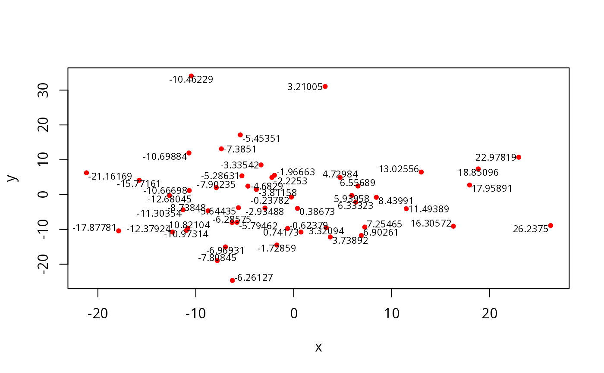
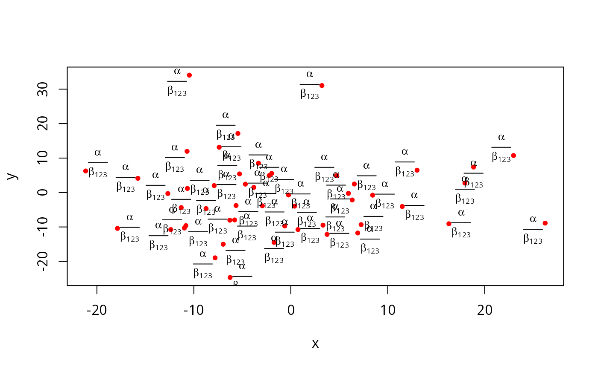
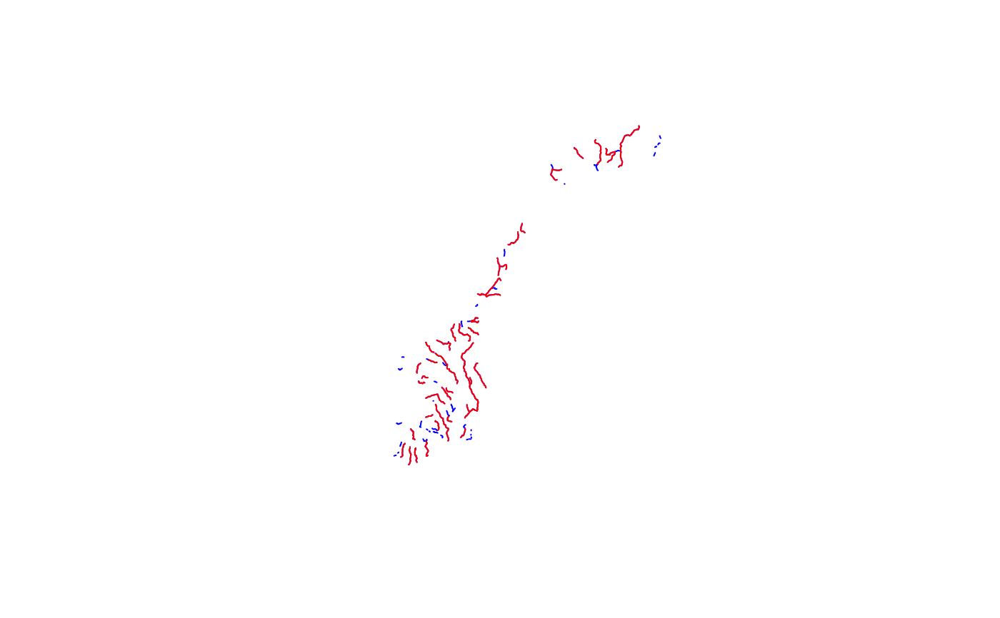
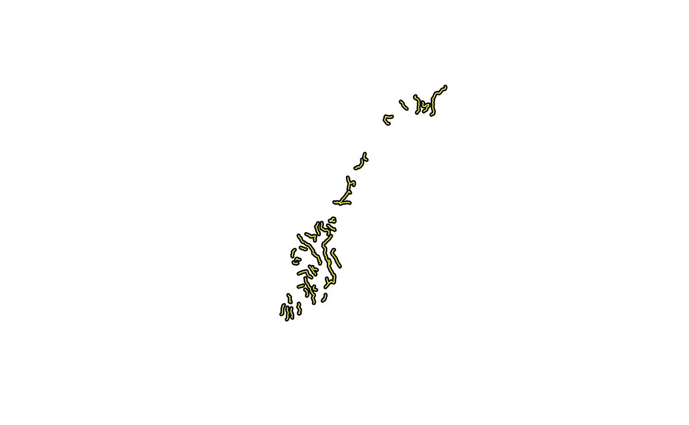
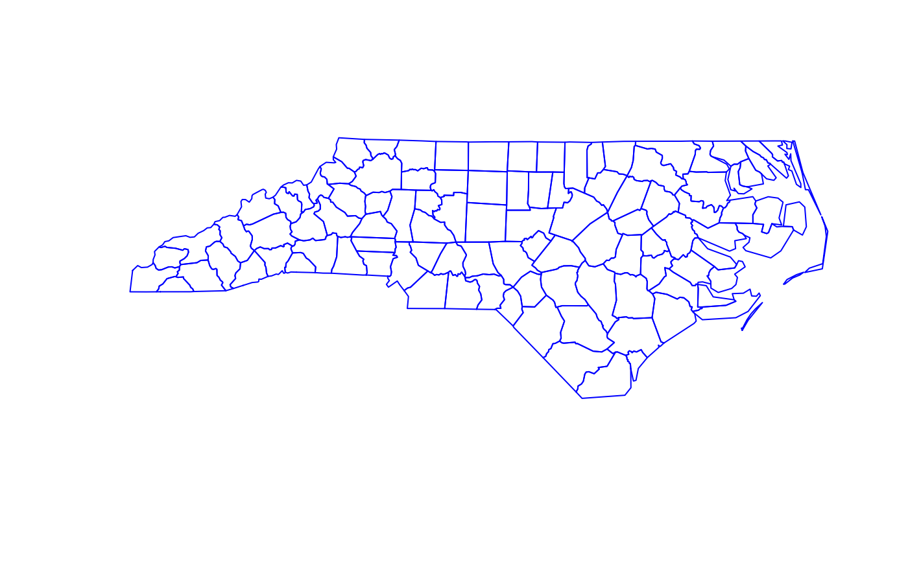
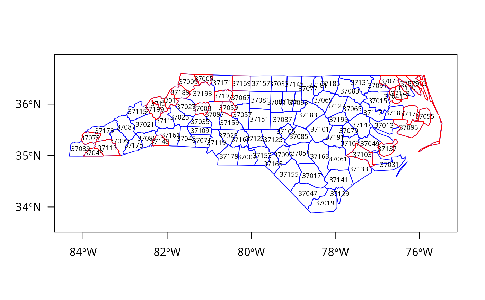
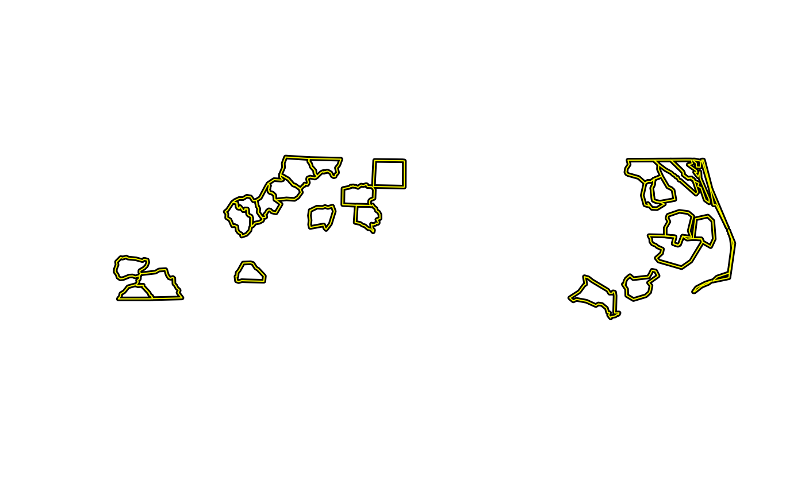
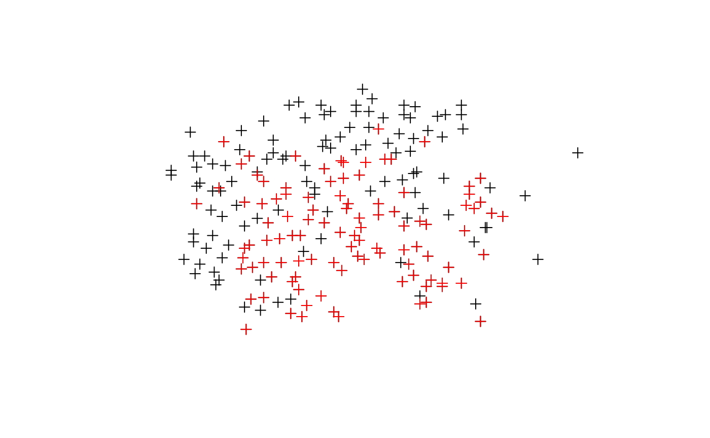
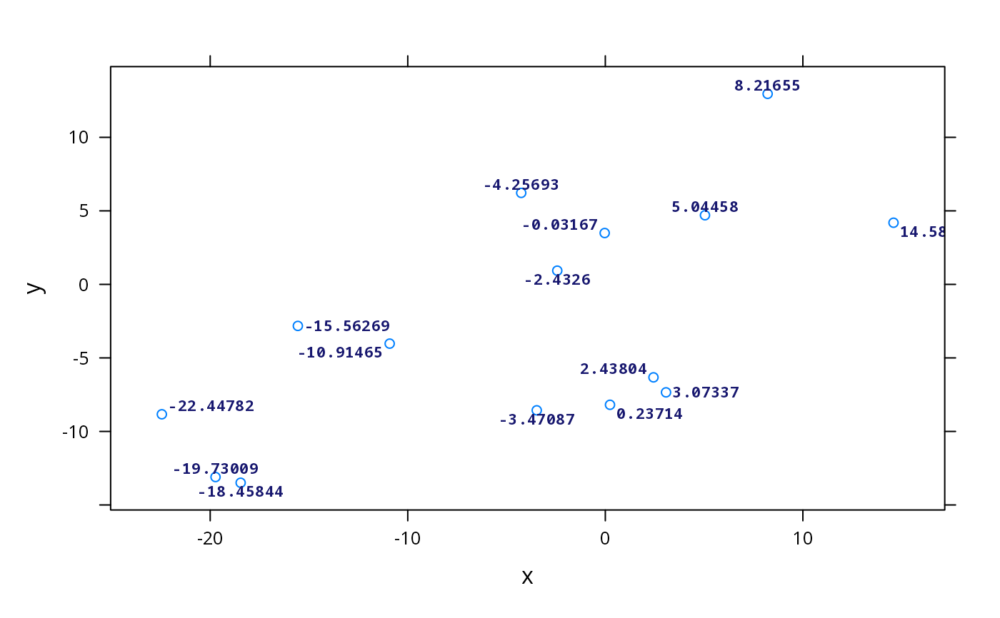
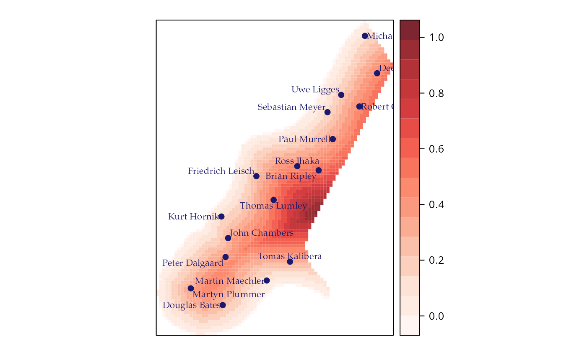

maptools-deprecated.RdCumulative deprecated functions and methods from maptools prior to package retirement/archiving during 2023.
pointLabel(x, y = NULL, labels = seq(along = x), cex = 1, method = c("SANN", "GA"),
allowSmallOverlap = FALSE, trace = FALSE, doPlot = TRUE, ...) # moved to car
getinfo.shape(filen)
# S3 method for shapehead
print(x, ...)
readShapeLines(fn, proj4string=CRS(as.character(NA)), verbose=FALSE,
repair=FALSE, delete_null_obj=FALSE)
writeLinesShape(x, fn, factor2char = TRUE, max_nchar=254)
readShapeSpatial(fn, proj4string=CRS(as.character(NA)),
verbose=FALSE, repair=FALSE, IDvar=NULL, force_ring=FALSE,
delete_null_obj=FALSE, retrieve_ABS_null=FALSE)
writeSpatialShape(x, fn, factor2char = TRUE, max_nchar=254)
readShapePoly(fn, IDvar=NULL, proj4string=CRS(as.character(NA)),
verbose=FALSE, repair=FALSE, force_ring=FALSE, delete_null_obj=FALSE,
retrieve_ABS_null=FALSE)
writePolyShape(x, fn, factor2char = TRUE, max_nchar=254)
readShapePoints(fn, proj4string = CRS(as.character(NA)), verbose = FALSE,
repair=FALSE)
writePointsShape(x, fn, factor2char = TRUE, max_nchar=254)
lineLabel(line, label,
spar=.6, position = c('above', 'below'),
textloc = 'constantSlope',
col = add.text$col,
alpha = add.text$alpha,
cex = add.text$cex,
lineheight = add.text$lineheight,
font = add.text$font,
fontfamily = add.text$fontfamily,
fontface = add.text$fontface,
lty = add.line$lty,
lwd = add.line$lwd,
col.line = add.line$col,
identifier = 'lineLabel',
...)
sp.lineLabel(object, labels, byid=TRUE,...)
label(object, text, ...)
panel.pointLabel(x, y = NULL,
labels = seq(along = x),
method = c("SANN", "GA"),
allowSmallOverlap = FALSE,
col = add.text$col,
alpha = add.text$alpha,
cex = add.text$cex,
lineheight = add.text$lineheight,
font = add.text$font,
fontfamily = add.text$fontfamily,
fontface = add.text$fontface,
fill='transparent',
...)
sp.pointLabel(object, labels, ...)
elide(obj, ...)name of file with *.shp extension
as with plot.default, these provide the x and y coordinates for
the point labels. Any reasonable way of defining the coordinates is
acceptable. See the function xy.coords for details.
as with text, a character vector or expression specifying the text to be
written. An attempt is made to coerce other language objects
(names and calls) to expressions, and vectors and other
classed objects to character vectors by as.character.
numeric character expansion factor as with text.
the optimization method, either “SANN” for simulated annealing (the default) or “GA” for a genetic algorithm.
logical; if TRUE, labels are allowed
a small overlap. The overlap allowed is 2% of the diagonal
distance of the plot area.
logical; if TRUE, status updates are given as the optimization algorithms
progress.
logical; if TRUE, the labels are plotted on the
existing graph with text.
shapefile layer name, when writing omitting the extensions *.shp, *.shx and *.dbf, which are added in the function
Object of class CRS; holding a valid proj4 string
default FALSE - report type of shapefile and number of shapes
default FALSE: some shapefiles provided by Geolytics Inc. have values of object sizes stored in the *.shx index file that are eight bytes too large, leading the function to try to read past the end of file. If repair=TRUE, an attempt is made to repair the internal values, permitting such files to be read.
if TRUE, null geometries will be removed together with their data.frame rows
logical, default TRUE, convert factor columns to character
default 254, may be set to a higher limit and passed through to the DBF writer, please see Details in write.dbf
a character string: the name of a column in the shapefile DBF containing the ID values of the shapes - the values will be converted to a character vector (Polygons only)
if TRUE, close unclosed input rings (Polygons only)
default FALSE, if TRUE and delete_null_obj also TRUE, the function will return a data frame containing the data from any null geometries inserted by ABS (Polygons only)
A SpatialPoints object.
Graphical arguments. See gpar for details
a list of Lines.
a string or expression to be printed
following the path of line. The names of labels
should match the values of the ID slot of the lines to
label. If labels is missing, the ID slot is used
instead. The label method is a wrapper function to extract
the ID slots and create a suitable character object
with the correct names values.
If TRUE (default) only the longest line of each unique
ID value will be labelled.
a character or a numeric. It may be 'constantSlope',
'minSlope' or 'maxDepth', or the numeric index of the location. If
it is a numeric, its length must coincide with the number of
Lines.
smoothing parameter. With values near zero, the label will closely follow the line. Default value is .6. See smooth.spline for details.
character string ('above' or 'below') to define where the text must be placed.
graphical parameters for the line. See gpar for details.
A character string to identify the grob to be created.
object to be elided
other arguments:
if NULL, uses bounding box of object, otherwise the given bounding box
values to shift the coordinates of the input object; this is made ineffective by the scale argument
reverse coordinate axes
if NULL, coordinates not scaled; if TRUE, the longer dimension is scaled to lie within [0,1] and aspect maintained; if a scalar, the output range of [0,1] is multiplied by scale
translate coordinates on the main diagonal
default 0, rotate angle degrees clockwise around center
default NULL, if not NULL, the rotation center, numeric of length two
logical, default FALSE, if TRUE and scale TRUE, impose unit square bounding box (currently only points)
n <- 50
x <- rnorm(n)*10
y <- rnorm(n)*10
plot(x, y, col = "red", pch = 20)
pointLabel(x, y, as.character(round(x,5)), offset = 0, cex = .7)
#> Warning: Function moved to the car package because maptools is retiring in 2023

plot(x, y, col = "red", pch = 20)
pointLabel(x, y, expression(over(alpha, beta[123])), offset = 0, cex = .8)
#> Warning: Function moved to the car package because maptools is retiring in 2023

res <- getinfo.shape(system.file("shapes/fylk-val.shp", package="maptools")[1])
#> Warning: shapelib support is provided by GDAL through the sf and terra paackages among others
res
#> Warning: shapelib support is provided by GDAL through the sf and terra paackages among others
#> Shapefile type: PolyLine, (3), # of Shapes: 97
str(res)
#> List of 5
#> $ fname : chr "/tmp/Rtmpw6Wc0i/temp_libpath8a2de592a2f30/maptools/shapes/fylk-val.shp"
#> $ type : int 3
#> $ entities : int 97
#> $ minbounds: num [1:4] -4868 6456207 0 0
#> $ maxbounds: num [1:4] 1084722 7841997 0 0
#> - attr(*, "class")= chr "shapehead"
xx <- readShapeLines(system.file("shapes/fylk-val.shp", package="maptools")[1],
proj4string=CRS("+proj=utm +zone=33 +datum=WGS84"))
#> Warning: shapelib support is provided by GDAL through the sf and terra packages among others
plot(xx, col="blue")
summary(xx)
#> Object of class SpatialLinesDataFrame
#> Coordinates:
#> min max
#> x -4867.832 1084722
#> y 6456207.000 7841997
#> Is projected: TRUE
#> proj4string :
#> [+proj=utm +zone=33 +datum=WGS84 +units=m +no_defs]
#> Data attributes:
#> FNODE_ TNODE_ LPOLY_ RPOLY_
#> Min. : 1.00 Min. : 2.00 Min. :1.00 Min. :1.00
#> 1st Qu.: 40.00 1st Qu.: 39.00 1st Qu.:2.00 1st Qu.:2.00
#> Median : 74.00 Median : 77.00 Median :2.00 Median :2.00
#> Mean : 77.62 Mean : 77.55 Mean :1.99 Mean :1.99
#> 3rd Qu.:115.00 3rd Qu.:114.00 3rd Qu.:2.00 3rd Qu.:2.00
#> Max. :160.00 Max. :159.00 Max. :2.00 Max. :2.00
#> LENGTH VALINJE_ VALINJE_ID LTEMA VANNBR
#> Min. : 106.4 Min. : 1 Min. : 55.00 Min. :3211 Min. :13
#> 1st Qu.: 11866.5 1st Qu.:25 1st Qu.: 74.00 1st Qu.:3211 1st Qu.:13
#> Median : 31910.9 Median :49 Median : 95.00 Median :3211 Median :13
#> Mean : 41374.7 Mean :49 Mean : 94.32 Mean :3211 Mean :13
#> 3rd Qu.: 59311.8 3rd Qu.:73 3rd Qu.:114.00 3rd Qu.:3211 3rd Qu.:13
#> Max. :176540.1 Max. :97 Max. :135.00 Max. :3211 Max. :13
#> DATO
#> Min. :19970630
#> 1st Qu.:19970630
#> Median :19970630
#> Mean :19970630
#> 3rd Qu.:19970630
#> Max. :19970630
xxx <- xx[xx$LENGTH > 30000,]
plot(xxx, col="red", add=TRUE)

tmpfl <- paste(tempdir(), "xxline", sep="/")
writeLinesShape(xxx, tmpfl)
#> Warning: shapelib support is provided by GDAL through the sf and terra packages among others
getinfo.shape(paste(tmpfl, ".shp", sep=""))
#> Warning: shapelib support is provided by GDAL through the sf and terra paackages among others
#> Warning: shapelib support is provided by GDAL through the sf and terra paackages among others
#> Shapefile type: PolyLine, (3), # of Shapes: 51
axx <- readShapeLines(tmpfl, proj4string=CRS("+proj=utm +zone=33 +datum=WGS84"))
#> Warning: shapelib support is provided by GDAL through the sf and terra packages among others
plot(xxx, col="black", lwd=4)
plot(axx, col="yellow", lwd=1, add=TRUE)

unlink(paste(tmpfl, ".*", sep=""))
xx <- readShapeLines(system.file("shapes/sids.shp", package="maptools")[1],
proj4string=CRS("+proj=longlat +datum=NAD27"))
#> Warning: shapelib support is provided by GDAL through the sf and terra packages among others
plot(xx, col="blue")
library(maptools)
xx <- readShapeSpatial(system.file("shapes/sids.shp", package="maptools")[1],
IDvar="FIPSNO", proj4string=CRS("+proj=longlat +ellps=clrk66"))
#> Warning: shapelib support is provided by GDAL through the sf and terra packages among others
#> Warning: shapelib support is provided by GDAL through the sf and terra paackages among others
#> Warning: shapelib support is provided by GDAL through the sf and terra packages among others
summary(xx)
#> Object of class SpatialPolygonsDataFrame
#> Coordinates:
#> min max
#> x -84.32385 -75.45698
#> y 33.88199 36.58965
#> Is projected: FALSE
#> proj4string : [+proj=longlat +ellps=clrk66 +no_defs]
#> Data attributes:
#> AREA PERIMETER CNTY_ CNTY_ID NAME
#> Min. :0.0420 Min. :0.999 Min. :1825 Min. :1825 Alamance : 1
#> 1st Qu.:0.0910 1st Qu.:1.324 1st Qu.:1902 1st Qu.:1902 Alexander: 1
#> Median :0.1205 Median :1.609 Median :1982 Median :1982 Alleghany: 1
#> Mean :0.1263 Mean :1.673 Mean :1986 Mean :1986 Anson : 1
#> 3rd Qu.:0.1542 3rd Qu.:1.859 3rd Qu.:2067 3rd Qu.:2067 Ashe : 1
#> Max. :0.2410 Max. :3.640 Max. :2241 Max. :2241 Avery : 1
#> (Other) :94
#> FIPS FIPSNO CRESS_ID BIR74 SID74
#> 37001 : 1 Min. :37001 Min. : 1.00 Min. : 248 Min. : 0.00
#> 37003 : 1 1st Qu.:37050 1st Qu.: 25.75 1st Qu.: 1077 1st Qu.: 2.00
#> 37005 : 1 Median :37100 Median : 50.50 Median : 2180 Median : 4.00
#> 37007 : 1 Mean :37100 Mean : 50.50 Mean : 3300 Mean : 6.67
#> 37009 : 1 3rd Qu.:37150 3rd Qu.: 75.25 3rd Qu.: 3936 3rd Qu.: 8.25
#> 37011 : 1 Max. :37199 Max. :100.00 Max. :21588 Max. :44.00
#> (Other):94
#> NWBIR74 BIR79 SID79 NWBIR79
#> Min. : 1.0 Min. : 319 Min. : 0.00 Min. : 3.0
#> 1st Qu.: 190.0 1st Qu.: 1336 1st Qu.: 2.00 1st Qu.: 250.5
#> Median : 697.5 Median : 2636 Median : 5.00 Median : 874.5
#> Mean :1050.8 Mean : 4224 Mean : 8.36 Mean : 1352.8
#> 3rd Qu.:1168.5 3rd Qu.: 4889 3rd Qu.:10.25 3rd Qu.: 1406.8
#> Max. :8027.0 Max. :30757 Max. :57.00 Max. :11631.0
#>
xxx <- xx[xx$SID74 < 2,]
tmpfl <- paste(tempdir(), "xxpoly", sep="/")
writeSpatialShape(xxx, tmpfl)
#> Warning: shapelib support is provided by GDAL through the sf and terra packages among others
#> Warning: shapelib support is provided by GDAL through the sf and terra packages among others
getinfo.shape(paste(tmpfl, ".shp", sep=""))
#> Warning: shapelib support is provided by GDAL through the sf and terra paackages among others
#> Warning: shapelib support is provided by GDAL through the sf and terra paackages among others
#> Shapefile type: Polygon, (5), # of Shapes: 24
unlink(paste(tmpfl, ".*", sep=""))
xx <- readShapeSpatial(system.file("shapes/fylk-val.shp",
package="maptools")[1], proj4string=CRS("+proj=utm +zone=33 +datum=WGS84"))
#> Warning: shapelib support is provided by GDAL through the sf and terra packages among others
#> Warning: shapelib support is provided by GDAL through the sf and terra paackages among others
#> Warning: shapelib support is provided by GDAL through the sf and terra packages among others
summary(xx)
#> Object of class SpatialLinesDataFrame
#> Coordinates:
#> min max
#> x -4867.832 1084722
#> y 6456207.000 7841997
#> Is projected: TRUE
#> proj4string :
#> [+proj=utm +zone=33 +datum=WGS84 +units=m +no_defs]
#> Data attributes:
#> FNODE_ TNODE_ LPOLY_ RPOLY_
#> Min. : 1.00 Min. : 2.00 Min. :1.00 Min. :1.00
#> 1st Qu.: 40.00 1st Qu.: 39.00 1st Qu.:2.00 1st Qu.:2.00
#> Median : 74.00 Median : 77.00 Median :2.00 Median :2.00
#> Mean : 77.62 Mean : 77.55 Mean :1.99 Mean :1.99
#> 3rd Qu.:115.00 3rd Qu.:114.00 3rd Qu.:2.00 3rd Qu.:2.00
#> Max. :160.00 Max. :159.00 Max. :2.00 Max. :2.00
#> LENGTH VALINJE_ VALINJE_ID LTEMA VANNBR
#> Min. : 106.4 Min. : 1 Min. : 55.00 Min. :3211 Min. :13
#> 1st Qu.: 11866.5 1st Qu.:25 1st Qu.: 74.00 1st Qu.:3211 1st Qu.:13
#> Median : 31910.9 Median :49 Median : 95.00 Median :3211 Median :13
#> Mean : 41374.7 Mean :49 Mean : 94.32 Mean :3211 Mean :13
#> 3rd Qu.: 59311.8 3rd Qu.:73 3rd Qu.:114.00 3rd Qu.:3211 3rd Qu.:13
#> Max. :176540.1 Max. :97 Max. :135.00 Max. :3211 Max. :13
#> DATO
#> Min. :19970630
#> 1st Qu.:19970630
#> Median :19970630
#> Mean :19970630
#> 3rd Qu.:19970630
#> Max. :19970630
xxx <- xx[xx$LENGTH > 30000,]
plot(xxx, col="red", add=TRUE)

tmpfl <- paste(tempdir(), "xxline", sep="/")
writeSpatialShape(xxx, tmpfl)
#> Warning: shapelib support is provided by GDAL through the sf and terra packages among others
#> Warning: shapelib support is provided by GDAL through the sf and terra packages among others
getinfo.shape(paste(tmpfl, ".shp", sep=""))
#> Warning: shapelib support is provided by GDAL through the sf and terra paackages among others
#> Warning: shapelib support is provided by GDAL through the sf and terra paackages among others
#> Shapefile type: PolyLine, (3), # of Shapes: 51
unlink(paste(tmpfl, ".*", sep=""))
xx <- readShapeSpatial(system.file("shapes/baltim.shp", package="maptools")[1])
#> Warning: shapelib support is provided by GDAL through the sf and terra packages among others
#> Warning: shapelib support is provided by GDAL through the sf and terra paackages among others
#> Warning: shapelib support is provided by GDAL through the sf and terra packages among others
summary(xx)
#> Object of class SpatialPointsDataFrame
#> Coordinates:
#> min max
#> coords.x1 860.0 987.5
#> coords.x2 505.5 581.0
#> Is projected: NA
#> proj4string : [NA]
#> Number of points: 211
#> Data attributes:
#> STATION PRICE NROOM DWELL
#> Min. : 1.0 Min. : 3.50 Min. : 3.000 Min. :0.0000
#> 1st Qu.: 53.5 1st Qu.: 30.95 1st Qu.: 5.000 1st Qu.:0.0000
#> Median :106.0 Median : 40.00 Median : 5.000 Median :1.0000
#> Mean :106.0 Mean : 44.31 Mean : 5.199 Mean :0.5355
#> 3rd Qu.:158.5 3rd Qu.: 53.75 3rd Qu.: 6.000 3rd Qu.:1.0000
#> Max. :211.0 Max. :165.00 Max. :10.000 Max. :1.0000
#> NBATH PATIO FIREPL AC
#> Min. :1.000 Min. :0.0000 Min. :0.0000 Min. :0.0000
#> 1st Qu.:1.000 1st Qu.:0.0000 1st Qu.:0.0000 1st Qu.:0.0000
#> Median :1.500 Median :0.0000 Median :0.0000 Median :0.0000
#> Mean :1.573 Mean :0.1469 Mean :0.2417 Mean :0.2417
#> 3rd Qu.:2.000 3rd Qu.:0.0000 3rd Qu.:0.0000 3rd Qu.:0.0000
#> Max. :5.000 Max. :1.0000 Max. :1.0000 Max. :1.0000
#> BMENT NSTOR GAR AGE
#> Min. :0.000 Min. :1.000 Min. :0.0000 Min. : 0.0
#> 1st Qu.:2.000 1st Qu.:2.000 1st Qu.:0.0000 1st Qu.: 20.0
#> Median :2.000 Median :2.000 Median :0.0000 Median : 25.0
#> Mean :1.981 Mean :1.905 Mean :0.2512 Mean : 30.1
#> 3rd Qu.:3.000 3rd Qu.:2.000 3rd Qu.:0.0000 3rd Qu.: 40.0
#> Max. :3.000 Max. :3.000 Max. :3.0000 Max. :148.0
#> CITCOU LOTSZ SQFT X
#> Min. :0.0000 Min. : 5.70 Min. : 5.76 Min. :860.0
#> 1st Qu.:0.0000 1st Qu.: 20.76 1st Qu.:11.02 1st Qu.:889.0
#> Median :1.0000 Median : 56.25 Median :13.44 Median :910.0
#> Mean :0.6066 Mean : 72.28 Mean :16.43 Mean :911.6
#> 3rd Qu.:1.0000 3rd Qu.: 84.32 3rd Qu.:19.94 3rd Qu.:933.5
#> Max. :1.0000 Max. :400.37 Max. :47.61 Max. :987.5
#> Y
#> Min. :505.5
#> 1st Qu.:528.8
#> Median :544.5
#> Mean :544.2
#> 3rd Qu.:559.0
#> Max. :581.0
xxx <- xx[xx$PRICE < 40,]
tmpfl <- paste(tempdir(), "xxpts", sep="/")
writeSpatialShape(xxx, tmpfl)
#> Warning: shapelib support is provided by GDAL through the sf and terra packages among others
#> Warning: shapelib support is provided by GDAL through the sf and terra packages among others
getinfo.shape(paste(tmpfl, ".shp", sep=""))
#> Warning: shapelib support is provided by GDAL through the sf and terra paackages among others
#> Warning: shapelib support is provided by GDAL through the sf and terra paackages among others
#> Shapefile type: Point, (1), # of Shapes: 103
unlink(paste(tmpfl, ".*", sep=""))
library(maptools)
xx <- readShapePoly(system.file("shapes/sids.shp", package="maptools")[1],
IDvar="FIPSNO", proj4string=CRS("+proj=longlat +ellps=clrk66"))
#> Warning: shapelib support is provided by GDAL through the sf and terra packages among others
plot(xx, border="blue", axes=TRUE, las=1)
text(coordinates(xx), labels=row.names(xx), cex=0.6)
as(xx, "data.frame")[1:5, 1:6]
#> AREA PERIMETER CNTY_ CNTY_ID NAME FIPS
#> 37001 0.111 1.392 1904 1904 Alamance 37001
#> 37003 0.066 1.070 1950 1950 Alexander 37003
#> 37005 0.061 1.231 1827 1827 Alleghany 37005
#> 37007 0.138 1.621 2096 2096 Anson 37007
#> 37009 0.114 1.442 1825 1825 Ashe 37009
xxx <- xx[xx$SID74 < 2,]
plot(xxx, border="red", add=TRUE)

tmpfl <- paste(tempdir(), "xxpoly", sep="/")
writePolyShape(xxx, tmpfl)
#> Warning: shapelib support is provided by GDAL through the sf and terra packages among others
getinfo.shape(paste(tmpfl, ".shp", sep=""))
#> Warning: shapelib support is provided by GDAL through the sf and terra paackages among others
#> Warning: shapelib support is provided by GDAL through the sf and terra paackages among others
#> Shapefile type: Polygon, (5), # of Shapes: 24
axx <- readShapePoly(tmpfl, proj4string=CRS("+proj=longlat +ellps=clrk66"))
#> Warning: shapelib support is provided by GDAL through the sf and terra packages among others
plot(xxx, border="black", lwd=4)
plot(axx, border="yellow", lwd=1, add=TRUE)

unlink(paste(tmpfl, ".*", sep=""))
library(maptools)
xx <- readShapePoints(system.file("shapes/baltim.shp", package="maptools")[1])
#> Warning: shapelib support is provided by GDAL through the sf and terra packages among others
plot(xx)
summary(xx)
#> Object of class SpatialPointsDataFrame
#> Coordinates:
#> min max
#> coords.x1 860.0 987.5
#> coords.x2 505.5 581.0
#> Is projected: NA
#> proj4string : [NA]
#> Number of points: 211
#> Data attributes:
#> STATION PRICE NROOM DWELL
#> Min. : 1.0 Min. : 3.50 Min. : 3.000 Min. :0.0000
#> 1st Qu.: 53.5 1st Qu.: 30.95 1st Qu.: 5.000 1st Qu.:0.0000
#> Median :106.0 Median : 40.00 Median : 5.000 Median :1.0000
#> Mean :106.0 Mean : 44.31 Mean : 5.199 Mean :0.5355
#> 3rd Qu.:158.5 3rd Qu.: 53.75 3rd Qu.: 6.000 3rd Qu.:1.0000
#> Max. :211.0 Max. :165.00 Max. :10.000 Max. :1.0000
#> NBATH PATIO FIREPL AC
#> Min. :1.000 Min. :0.0000 Min. :0.0000 Min. :0.0000
#> 1st Qu.:1.000 1st Qu.:0.0000 1st Qu.:0.0000 1st Qu.:0.0000
#> Median :1.500 Median :0.0000 Median :0.0000 Median :0.0000
#> Mean :1.573 Mean :0.1469 Mean :0.2417 Mean :0.2417
#> 3rd Qu.:2.000 3rd Qu.:0.0000 3rd Qu.:0.0000 3rd Qu.:0.0000
#> Max. :5.000 Max. :1.0000 Max. :1.0000 Max. :1.0000
#> BMENT NSTOR GAR AGE
#> Min. :0.000 Min. :1.000 Min. :0.0000 Min. : 0.0
#> 1st Qu.:2.000 1st Qu.:2.000 1st Qu.:0.0000 1st Qu.: 20.0
#> Median :2.000 Median :2.000 Median :0.0000 Median : 25.0
#> Mean :1.981 Mean :1.905 Mean :0.2512 Mean : 30.1
#> 3rd Qu.:3.000 3rd Qu.:2.000 3rd Qu.:0.0000 3rd Qu.: 40.0
#> Max. :3.000 Max. :3.000 Max. :3.0000 Max. :148.0
#> CITCOU LOTSZ SQFT X
#> Min. :0.0000 Min. : 5.70 Min. : 5.76 Min. :860.0
#> 1st Qu.:0.0000 1st Qu.: 20.76 1st Qu.:11.02 1st Qu.:889.0
#> Median :1.0000 Median : 56.25 Median :13.44 Median :910.0
#> Mean :0.6066 Mean : 72.28 Mean :16.43 Mean :911.6
#> 3rd Qu.:1.0000 3rd Qu.: 84.32 3rd Qu.:19.94 3rd Qu.:933.5
#> Max. :1.0000 Max. :400.37 Max. :47.61 Max. :987.5
#> Y
#> Min. :505.5
#> 1st Qu.:528.8
#> Median :544.5
#> Mean :544.2
#> 3rd Qu.:559.0
#> Max. :581.0
xxx <- xx[xx$PRICE < 40,]
tmpfl <- paste(tempdir(), "xxpts", sep="/")
writePointsShape(xxx, tmpfl)
#> Warning: shapelib support is provided by GDAL through the sf and terra packages among others
getinfo.shape(paste(tmpfl, ".shp", sep=""))
#> Warning: shapelib support is provided by GDAL through the sf and terra paackages among others
#> Warning: shapelib support is provided by GDAL through the sf and terra paackages among others
#> Shapefile type: Point, (1), # of Shapes: 103
axx <- readShapePoints(tmpfl)
#> Warning: shapelib support is provided by GDAL through the sf and terra packages among others
plot(axx, col="red", add=TRUE)

unlink(paste(tmpfl, ".*", sep=""))
xx <- readShapePoints(system.file("shapes/pointZ.shp", package="maptools")[1])
#> Warning: shapelib support is provided by GDAL through the sf and terra packages among others
dimensions(xx)
#> [1] 3
plot(xx)
summary(xx)
#> Object of class SpatialPointsDataFrame
#> Coordinates:
#> min max
#> coords.x1 721627.3367 768477.042
#> coords.x2 5433514.5147 5507962.986
#> coords.x3 274.4738 1821.528
#> Is projected: NA
#> proj4string : [NA]
#> Number of points: 400
#> Data attributes:
#> Id WTN coords_x1 coords_x2
#> Min. :0 Min. : 186 Min. :721627 Min. :5433515
#> 1st Qu.:0 1st Qu.:18974 1st Qu.:738257 1st Qu.:5448530
#> Median :0 Median :34510 Median :749857 Median :5455814
#> Mean :0 Mean :37679 Mean :746783 Mean :5461250
#> 3rd Qu.:0 3rd Qu.:57886 3rd Qu.:752059 3rd Qu.:5472530
#> Max. :0 Max. :83171 Max. :768477 Max. :5507963
#> coords_x3
#> Min. : 274.5
#> 1st Qu.: 307.0
#> Median : 397.1
#> Mean : 452.1
#> 3rd Qu.: 481.1
#> Max. :1821.5
n <- 15
x <- rnorm(n)*10
y <- rnorm(n)*10
labels <- as.character(round(x, 5))
myTheme <- list(add.text=list(
cex=0.7,
col='midnightblue',
fontface=2,
fontfamily='mono'))
library(lattice)
xyplot(y~x,
labels=labels,
par.settings=myTheme,
panel=function(x, y, labels, ...){
panel.xyplot(x, y, ...)
panel.pointLabel(x, y, labels=labels, ...)
})
#> Warning: Function moved to https://github.com/oscarperpinan/label
#> Warning: Function moved to https://github.com/oscarperpinan/label

data(meuse.grid)
coordinates(meuse.grid) = ~x+y
proj4string(meuse.grid) <- CRS("+init=epsg:28992")
gridded(meuse.grid) = TRUE
pts <- spsample(meuse.grid, n=15, type="random")
Rauthors <- readLines(file.path(R.home("doc"), "AUTHORS"))[9:28]
someAuthors <- Rauthors[seq_along(pts)]
sl1 <- list('sp.points', pts, pch=19, cex=.8, col='midnightblue')
sl2 <- list('sp.pointLabel', pts, label=someAuthors,
cex=0.7, col='midnightblue',
fontfamily='Palatino')
run <- FALSE
if (require("RColorBrewer", quietly=TRUE)) run <- TRUE
if (run) {
myCols <- adjustcolor(colorRampPalette(brewer.pal(n=9, 'Reds'))(100), .85)
spplot(meuse.grid["dist"], col.regions=myCols, sp.layout=list(sl1, sl2))
}
#> Warning: Function moved to https://github.com/oscarperpinan/label
#> Warning: Function moved to https://github.com/oscarperpinan/label
#> Warning: Function moved to https://github.com/oscarperpinan/label

data(meuse.grid)
coordinates(meuse.grid) = ~x+y
#> Error in `coordinates<-`(`*tmp*`, value = ~x + y): setting coordinates cannot be done on Spatial objects, where they have already been set
proj4string(meuse.grid) <- CRS("+init=epsg:28992")
gridded(meuse.grid) = TRUE
data(meuse)
coordinates(meuse) = ~x+y
data(meuse.riv)
meuse.sl <- SpatialLines(list(Lines(list(Line(meuse.riv)), "1")))
run <- FALSE
if (require("RColorBrewer", quietly=TRUE)) run <- TRUE
if (run) {
myCols <- adjustcolor(colorRampPalette(brewer.pal(n=9, 'Reds'))(100), .85)
labs <- label(meuse.sl, 'Meuse River')
## Maximum depth
sl1 <- list('sp.lineLabel', meuse.sl, label=labs,
position='below', textloc='maxDepth',
spar=.2,
col='darkblue', cex=1,
fontfamily='Palatino',
fontface=2)
spplot(meuse.grid["dist"],
col.regions=myCols,
sp.layout = sl1)
## Constant slope
sl2 <- modifyList(sl1, list(textloc = 'constantSlope')) ## Default
spplot(meuse.grid["dist"],
col.regions=myCols,
sp.layout = sl2)
## Location defined by its numeric index
sl3 <- modifyList(sl1, list(textloc = 140, position='above'))
spplot(meuse.grid["dist"],
col.regions=myCols,
sp.layout = sl3)
data(meuse)
coordinates(meuse) <- c("x", "y")
proj4string(meuse) <- CRS("+init=epsg:28992")
data(meuse.riv)
river_polygon <- Polygons(list(Polygon(meuse.riv)), ID="meuse")
rivers <- SpatialPolygons(list(river_polygon))
proj4string(rivers) <- CRS("+init=epsg:28992")
rivers1 <- elide(rivers, reflect=c(TRUE, TRUE), scale=TRUE)
meuse1 <- elide(meuse, bb=bbox(rivers), reflect=c(TRUE, TRUE), scale=TRUE)
opar <- par(mfrow=c(1,2))
plot(rivers, axes=TRUE)
plot(meuse, add=TRUE)
plot(rivers1, axes=TRUE)
plot(meuse1, add=TRUE)
par(opar)
meuse1 <- elide(meuse, shift=c(10000, -10000))
bbox(meuse)
bbox(meuse1)
rivers1 <- elide(rivers, shift=c(10000, -10000))
bbox(rivers)
bbox(rivers1)
meuse1 <- elide(meuse, rotate=-30, center=apply(bbox(meuse), 1, mean))
bbox(meuse)
bbox(meuse1)
plot(meuse1, axes=TRUE)
}
#> Warning: Function moved to https://github.com/oscarperpinan/label
#> Error in `coordinates<-`(`*tmp*`, value = c("x", "y")): setting coordinates cannot be done on Spatial objects, where they have already been set